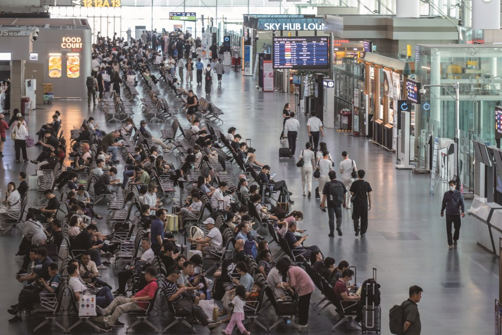
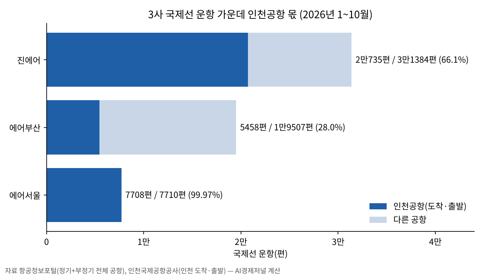
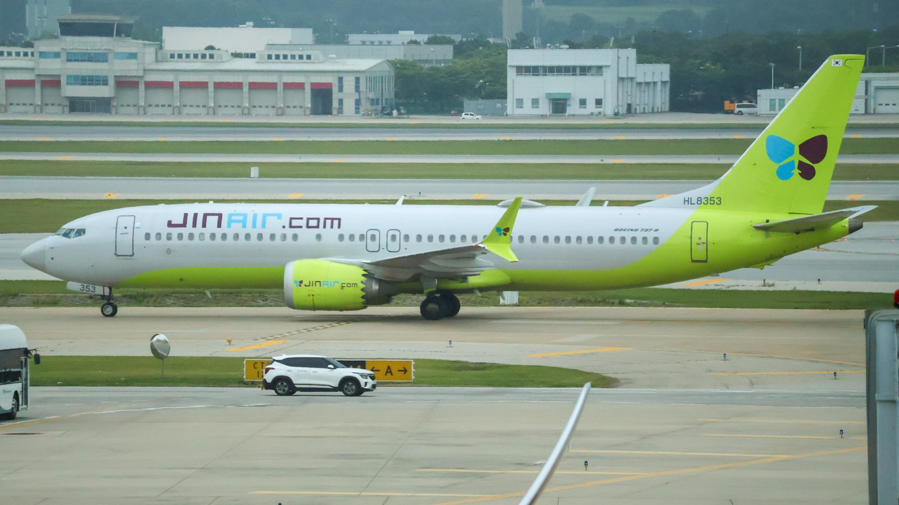
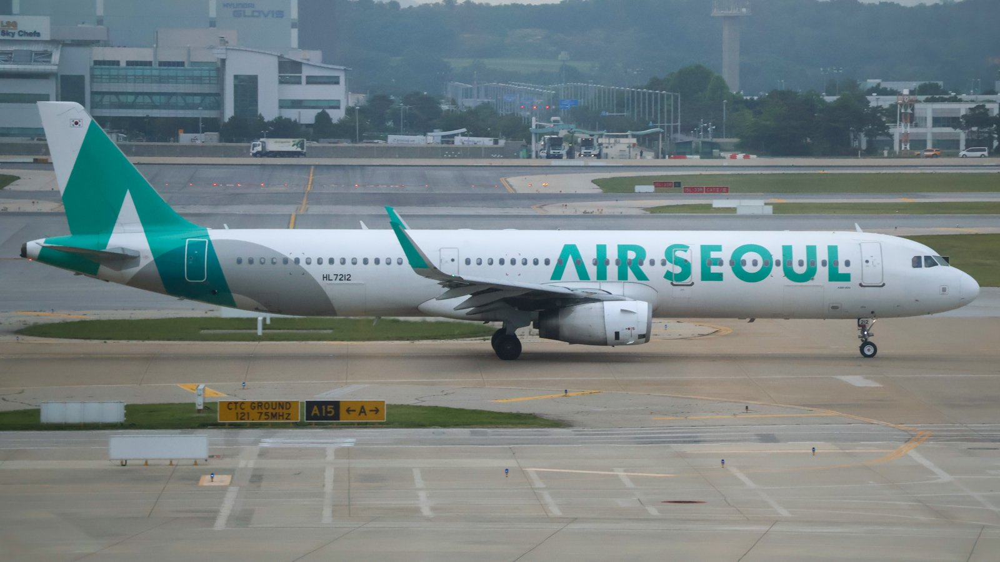
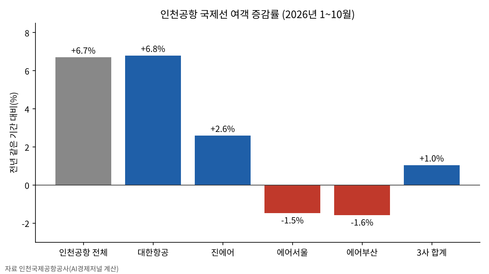

[공항과 경제] 통합 진에어 3사 국제선 운항 58% 인천, 김해 제2허브 계획
김해 국제선 28개→33개, 주 281회→339회 계획
3사 인천 국제선 여객 1.0% 증가, 공항 전체 6.7% 증가
AI경제저널=김갑봉 기자 | 국토교통부(장관 홍지선)는 지난 12일 진에어·에어서울·에어부산 세 회사의 법인 합병 인가를 발표했다. 공정거래위원회(위원장 주병기)도 같은 보도자료에서 기업결합 신고 승인을 알렸다. 세 회사를 합친 통합 진에어는 내년 3월 17일 출범할 예정이다.
국토부는 진에어가 낸 부산 제2허브 육성 계획을 보도참고자료에 담았다. 김해공항 국제선을 28개 노선에서 33개로 늘리는 내용이다. 올해 1~10월 세 회사 국제선 운항 편수의 57.9%는 인천공항 도착·출발 편이다(AI경제저널 계산). 보도참고자료에 인천 노선 계획은 없다.

합병 주주총회 2월 3일, 합병기일 3월 16일
진에어 합병 정정 공시를 보면 합병비율은 에어부산 1주당 진에어 신주 0.2862684주, 에어서울 1주당 0.7501939주다. 합병 승인 주주총회는 내년 2월 3일이고 합병기일은 3월 16일이다. 합병 등기는 3월 17일, 신주 상장은 3월 31일 예정이다.
진에어 주주의 합병 반대 의사 통지는 1월 19일부터 2월 2일까지 받는다. 채권자 이의 제출 기간은 2월 3일부터 3월 3일까지다.
진에어는 합병 목적으로 중복 노선의 비효율 해소를 들었다. 일본·동남아·중국 핵심 단거리 국제선과 국내선의 운항 편수·슬롯(운항 시각)·가격 경쟁력을 높이는 것도 목적으로 들었다. 서울과 부산 노선망을 넓히고 핵심 노선을 「셔틀화」한다고 밝혔다.
국토부는 통합 법인 출범일까지 안전운항체계 변경검사와 해외 항공당국 인허가를 마치라는 조건을 달았다. 소비자 보호 계획 등의 이행 여부는 매달 국토부에 보고하게 했다.
세 회사는 모두 한진 기업집단 계열사다. 공정위는 기업결합 심사기준에 따라 이 합병에 경쟁 제한성이 없다고 추정했다. 대한항공·아시아나항공 통합 대형 항공사는 오는 12월 17일 먼저 출범할 예정이다.
김해 주 339회, 독립 정비 거점
부산 제2허브 계획은 김해 국제선 운항을 주 281회에서 339회로 늘린다. 승무원·정비사 채용을 늘리고 지역대학과 산학협력을 넓힌다. 계획은 기존 인력 고용 승계와 인위적 구조조정 배제도 담았다.
진에어는 에어부산의 기존 시설을 유지하고 김해공항을 독립 정비 거점으로 키운다는 계획도 냈다. 국토부는 이 계획이 지방공항 활성화에 기여할 것으로 보고 이행을 계속 관리한다고 밝혔다.
부산 강서구(구청장 박상준)는 지난 10일 진에어와 대한항공에 통합 진에어 본사를 강서구로 옮겨 달라는 제안문을 보냈다. 연면적 약 1만8300㎡인 에어부산 사옥과 승무원 훈련시설을 바로 쓸 수 있다는 내용이다.
3사 국제선 운항 5만8601편, 인천 3만3901편
항공정보포털 통계로 올해 1~10월 세 회사 국제선 운항은 5만8601편이다. 인천국제공항공사 통계로 같은 기간 세 회사 인천공항 국제선 운항은 3만3901편이다.
국제선 운항 가운데 인천공항 편은 진에어 66.1%, 에어부산 28.0%다. 에어서울은 7710편 가운데 7708편이다(AI경제저널 계산). 운항 편수는 도착·출발을 합친 값이다.
인천국제공항공사 통계로 같은 기간 인천공항 국제선 여객은 6507만4601명이다. 지난해 같은 기간보다 6.7% 많다. 세 회사 여객은 667만6687명으로 1.0% 늘었다. 인천공항 국제선 여객 가운데 세 회사 비중은 10.8%에서 10.3%로 줄었다(AI경제저널 계산).
회사별로 보면 진에어는 421만4897명으로 2.6% 늘었다. 에어서울은 139만3414명, 에어부산은 106만8376명으로 각각 1.5%, 1.6% 줄었다. 같은 기간 대한항공은 1525만9087명으로 6.8% 늘었다(AI경제저널 계산).
진에어는 3분기 보고서에 인천발 고베·옌타이·이창을 새 목적지로 적었다. 에어부산은 반기보고서에 인천발 치앙마이 노선 운항과 인천 시장 점유율 확대 노력을 적었다.


진에어·에어부산 직원 3967명, 자회사 인력 정책
반기보고서를 보면 6월 말 직원은 진에어 2496명, 에어부산 1471명이다. 에어서울은 비상장사로 감사보고서만 공시한다. 진에어 본점은 서울 강서구 마곡, 에어부산 본사는 부산 강서구에 있다.
분기보고서를 보면 진에어는 9월 말 리스 항공기 33대를 보유했다. 에어부산은 보고서 작성일 기준 21대를 보유했다. 진에어는 대한항공이 지분 54.91%를 가진 자회사다. 진에어가 올해 1~9월 대한항공 외주정비비로 비용 처리한 금액은 1821억원이다.

홍콩이공대 왕웨이청(Weicheng Wang) 등 홍콩이공대·베이항대 연구진은 2025년 문헌 연구 한 편을 냈다. 학술지 『Research in Transportation Business & Management』에 실린 논문이다. 주제는 대형 항공사의 자회사 저비용항공사 전략이다.
연구진은 오스트레일리아·한국·일본을 이 전략의 대표 시장으로 꼽았다. 한국 대형 항공사의 자회사 저비용항공사는 꾸준히 커졌지만 모든 자회사가 큰 점유율을 얻지는 못했다고 적었다.
연구진은 자회사의 자율성과 그룹 안 인력 정책 조율을 중요 요인으로 꼽았다. 인건비 관리가 저비용 사업 모델의 핵심이라 인력 정책을 세심히 살펴야 한다고 적었다.

국토부의 다른 저비용항공사 경쟁력 방안 검토
박준상 국토교통부 항공산업과장은 대한항공 계열 항공사 통합을 두고 "엄중히 관리·감독하겠다"고 밝혔다. 안전 문제가 생기지 않고 소비자 편의가 줄지 않게 하겠다는 내용이다.
국토부는 대한항공 계열 항공사 규모가 커지는 만큼 다른 저비용항공사의 경쟁력을 키울 방안도 검토한다고 밝혔다. 항공사 사이 경쟁 환경을 만들겠다는 내용이다. 박 과장은 진에어에 국제 항공시장 경쟁력과 국민의 항공교통 편의를 함께 높이라고 당부했다.
참고문헌
- Wang, W., Fu, X., Wang, K., Sun, X., Wandelt, S., Wang, J., Wu, X., 「Low-cost carrier development under airline-within-airline strategy: Bibliometric analysis and systematic literature review」, 『Research in Transportation Business & Management』 59, Elsevier, 2025, 101305, https://doi.org/10.1016/j.rtbm.2025.101305
- "진에어-에어서울-에어부산 합병 인가, 27년 3월 17일부터 진에어로 통합 예정", 국토교통부·공정거래위원회, 2026.11.12, https://www.korea.kr/briefing/pressReleaseView.do?newsId=156788952
- "부산 강서구, "통합 LCC 본사 최적지는 강서구..." 대한항공·진에어에 공식 유치 제안", 부산 강서구, 2026.11.12, https://www.bsgangseo.go.kr/portal/board/post/view.do?bcIdx=526&mid=0501050000&idx=410496
- "[정정]회사합병 결정(2차 정정)", 진에어, 2026.11.16, https://kind.krx.co.kr/common/disclsviewer.do?method=search&acptno=20261116001073
- "반기보고서(2026.06)", 진에어, 2026.08.14, https://kind.krx.co.kr/common/disclsviewer.do?method=search&acptno=20260814002162
- "분기보고서(2026.09)", 진에어, 2026.11.13, https://kind.krx.co.kr/common/disclsviewer.do?method=search&acptno=20261113001195
- "반기보고서(2026.06)", 에어부산, 2026.08.13, https://kind.krx.co.kr/common/disclsviewer.do?method=search&acptno=20260813001175
- "분기보고서(2026.09)", 에어부산, 2026.11.12, https://kind.krx.co.kr/common/disclsviewer.do?method=search&acptno=20261112001094
- "인천공항 통계보기 — 항공사별 통계(노선 국제선, 2025·2026년 1~10월, 인천 도착·출발)", 인천국제공항공사, 2026.11.25 조회, https://www.airport.kr/co_ko/651/subview.do
- "항공운송통계 — 항공사별 상세조회(국제선, 정기+부정기, 2026년 1~10월)", 항공정보포털시스템, 2026.11.25 조회, https://www.airportal.go.kr/stats/transport/chartDetail.do
[사진 출처]
- [사진 1] 한국공항공사
- [사진 2] S5A-0043 / CC BY 4.0 / 위키미디어 공용
- [사진 3] S5A-0043 / CC BY 4.0 / 위키미디어 공용
※ 이 기사는 인공지능기자 위민아이(Wemin_AI)와 협력해 작성했습니다.
관련기사
저작권자 © AI경제저널 무단전재 및 재배포, AI학습 및 활용 금지